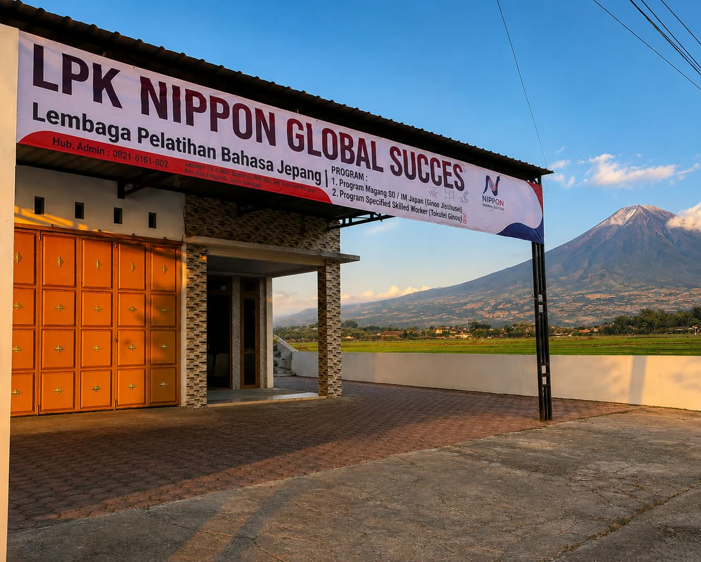
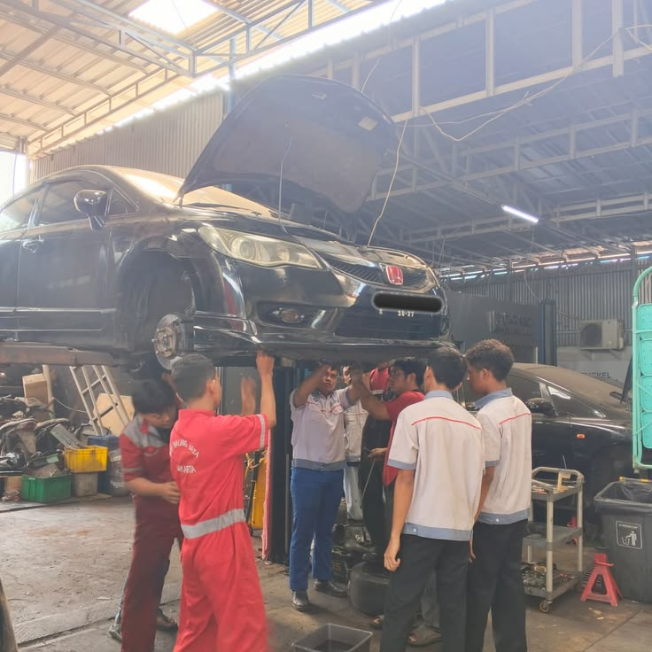

Tumbuh Bersama Sukses Bersama, Berbagi Bersama. Growing Together Succeeding Together, Sharing Together. 共に成長し共に成功しを育成し、共に分かち合う。
NIPPON GLOBAL SUCCES hadir sebagai mitra strategis untuk menjembatani talenta lokal menuju peluang karir tanpa batas di tingkat internasional. NIPPON GLOBAL SUCCES serves as a strategic partner with premium facilities to bridge local talents toward limitless career opportunities on the international stage. NIPPON GLOBAL SUCCES は、国内の優秀な人材と国際的なキャリアの機会を結ぶためのプレミアムな設備を備えた戦略的パートナーです。

0
+Tahun Pengalaman Years of Experience 経験年数
0
+Alumni Sukses Successful Alumni 成功した卒業生
0
+Mitra Perusahaan Corporate Partners 提携企業
0
%Legalitas Terjamin Guaranteed Legality 法的遵守
Profil LPK NIPPON GLOBAL SUCCES Company Profile 会社概要
LPK Nippon Global Success (NGS) merupakan lembaga pelatihan kerja yang berfokus pada pendidikan Bahasa Jepang dan persiapan sumber daya manusia Indonesia untuk melanjutkan pendidikan, magang, maupun bekerja di Jepang melalui jalur yang resmi dan sesuai dengan ketentuan yang berlaku. LPK Nippon Global Success (NGS) is a vocational training institution specializing in Japanese language education and the development and preparation of Indonesian human resources for further education, internship programs, and employment opportunities in Japan through official channels and in accordance with applicable regulations. LPK Nippon Global Success（NGS）**は、日本語教育を中心に、インドネシア人材の育成および日本での進学、インターンシップ、就労に向けた準備を行う職業訓練機関です。関係法令および適用される規定に基づき、正規のルートを通じて、日本での進学・インターンシップ・就労を目指す人材を支援しています。
Dedikasi Years of
Dedication 献身の
年数
Transformasi Visi Menjadi Aksi Nyata Transforming Vision into Real Action ビジョンを実際の行動へ
LPK Nippon Global Success (NGS) tidak hanya memberikan pembelajaran Bahasa Jepang, tetapi juga membekali peserta dengan kedisiplinan, mental dan fisik, karakter, budaya, serta etika kehidupan dan kerja di Jepang. Melalui program Tokutei Ginou, Ikusei Shuro. peserta mendapatkan pembelajaran dan pembekalan yang disesuaikan dengan kebutuhan masing-masing program. Peserta juga mendapatkan pendampingan untuk meningkatkan kemampuan bahasa, keterampilan, serta kesiapan menghadapi lingkungan kerja dan kehidupan di Jepang. Kami berkomitmen untuk membentuk sumber daya manusia yang kompeten, disiplin, mandiri, bertanggung jawab, dan siap beradaptasi dengan budaya serta lingkungan kerja Jepang. Bagi LPK Nippon Global Success, keberhasilan peserta bukan hanya tentang mampu berbahasa Jepang, tetapi juga tentang memiliki karakter, keterampilan, mental, dan sikap kerja yang baik sebagai bekal untuk meraih masa depan di Jepang. LPK Nippon Global Success (NGS) provides more than Japanese language education. We also equip participants with discipline, mental and physical preparedness, character development, an understanding of Japanese culture, as well as the values and ethics required for daily life and work in Japan. Through the Tokutei Ginou (Specified Skilled Worker) and Ikusei Shuro (Employment for Skill Development) programs, participants receive education and training tailored to the specific requirements of each program. Participants are also provided with continuous guidance and support to improve their language proficiency and practical skills, while developing the readiness needed to adapt to the working environment and daily life in Japan. We are committed to developing competent, disciplined, independent, responsible, and adaptable human resources who are prepared to embrace Japanese culture and the Japanese working environment. For LPK Nippon Global Success, a participant’s success is not defined solely by their ability to speak Japanese. It is also about developing strong character, practical skills, mental resilience, and a positive work ethic as a solid foundation for building a successful future in Japan. LPK Nippon Global Success（NGS）**では、日本語教育だけでなく、日本での生活や就労に必要な規律、心身の準備、人格形成、日本文化への理解、そして生活・仕事におけるマナーや倫理観についても指導しています。 **特定技能（Tokutei Ginou）および育成就労（Ikusei Shuro）**の各プログラムを通じて、それぞれのプログラムの目的や要件に応じた教育・研修を提供しています。また、参加者一人ひとりの日本語能力や技能の向上をサポートするとともに、日本での職場環境や生活環境に適応するための準備についても継続的に支援しています。 私たちは、確かな能力と規律、自立心、責任感を備え、日本の文化や職場環境に柔軟に適応できる人材の育成に取り組んでいます。 LPK Nippon Global Successにとって、参加者の成功とは、単に日本語を話せるようになることだけではありません。豊かな人間性、実践的な技能、強い精神力、そして良好な就労姿勢を身につけ、日本での将来を切り拓くための確かな基盤を築くことこそが、真の成功であると考えています。
Khususnya Specified Skilled Workers(SSW) dan kerja sama dengan berbagai perusahaan serta lembaga pelatihan kerja. Especially Specified Skilled Workers (SSW) and cooperation with various companies and vocational training institutions. 特に特定技能（SSW）や、さまざまな企業・職業訓練機関との協力に重点を置いています。
Didirikan dengan komitmen untuk menciptakan tenaga kerja yang kompeten, profesional dan siap bersaing di tingkat internasional. Nippon Global Success menjebatani kebutuhan industri Jepang dengan tenaga kerja indonesia yang berkualitas. Founded with a commitment to developing competent and professional human resources who are prepared to compete at the international level. Nippon Global Success serves as a bridge connecting the needs of Japanese industries with highly qualified Indonesian human resources. 技術スキルの向上、語学力の習得（N5〜N3）、規律ある人格形成に焦点を当て、特に東アジアの厳しい業界基準にカリキュラムが適合していることを保証します。
Visi Kami Our Vision 私たちのビジョン
- Menjadi Lembaga Pelatihan Kerja yang profesional, berkualitas, dan terpercaya dalam menghasilkan sumber daya manusia Indonesia yang kompeten, berkarakter, dan siap bersaing di dunia kerja global. To become a professional, high-quality, and trusted vocational training institution dedicated to developing competent and well-rounded Indonesian human resources who are prepared to compete in the global workforce. 日本語能力、実践的な技能、精神的な準備、規律、そして職業倫理を備え、社会や職場のニーズに応えることのできる、優れた競争力のある人材を育成します。。
- Membentuk sumber daya manusia yang unggul dan berdaya saing, dengan kemampuan Bahasa Jepang, keterampilan, mental, kedisiplinan, serta etos kerja yang sesuai dengan kebutuhan dunia kerja. To develop highly capable and competitive human resources equipped with Japanese language proficiency, practical skills, mental preparedness, discipline, and a strong work ethic aligned with the demands of the workforce. 日本語能力、実践的な技能、精神力、規律、そして職業倫理を備え、社会や職場のニーズに応えることのできる、優秀で競争力のある人材を育成します。
- Mewujudkan kesuksesan bersama antara peserta, mitra, dan LPK Nippon Global Success melalui pendidikan, pelatihan, dan kerja sama yang berkelanjutan. To achieve shared success among participants, partners, and LPK Nippon Global Success through education, training, and sustainable collaboration. 教育、研修、そして継続的な連携を通じて、参加者、パートナー、そしてLPK Nippon Global Successが共に成功を実現することを目指します。
Misi Kami Our Mission 私たちの使命
- Menyelenggarakan pendidikan dan pelatihan Bahasa Jepang yang berkualitas, terarah, dan sesuai dengan kebutuhan dunia kerja. To provide high-quality and structured Japanese language education and training tailored to the needs of the workforce. 質の高い、体系的な日本語教育・研修を提供し、社会や職場のニーズに応える人材を育成します。
- Membentuk sumber daya manusia yang kompeten dan berkarakter dengan menjunjung tinggi kedisiplinan, tanggung jawab, kejujuran, kemandirian, dan etos kerja. To develop competent and well-rounded human resources who uphold discipline, responsibility, integrity, independence, and a strong work ethic. 規律、責任感、誠実さ、自立心、そして高い職業倫理を重んじ、能力と豊かな人間性を備えた人材を育成します。
- Membekali peserta dengan budaya, etika, mental, dan kesiapan fisik untuk menghadapi kehidupan serta lingkungan kerja di Jepang. To equip participants with an understanding of Japanese culture and ethics, as well as the mental and physical preparedness needed to adapt to life and the working environment in Japan. 日本の文化やマナー、倫理観についての理解を深めるとともに、日本での生活や職場環境に適応するために必要な精神面および身体面の準備を整えます。
- Mempersiapkan peserta melalui program kerja dan pelatihan yang resmi dan sesuai dengan ketentuan yang berlaku. To prepare participants through official employment and training programs in accordance with applicable laws and regulations. 法令および適用される規定に則った正規の就労・研修プログラムを通じて、参加者が日本での就労に向けて必要な準備を整えられるよう支援します。
Program Pelatihan & Magang Training & Apprenticeship Programs 研修および技能実習プログラム
Rangkaian program kami dirancang dan dikelola langsung oleh para ahli. Klik kartu program di bawah ini untuk membaca detail lengkap kurikulum dan mengisi formulir pendaftaran. Our programs are carefully designed and directly managed by experienced professionals. Click the program card below to explore the full curriculum details and complete the registration form. 当校の各プログラムは、専門知識と経験を持つプロフェッショナルが直接企画・運営しています。以下のプログラムカードをクリックして、カリキュラムの詳細をご確認のうえ、お申し込みフォームにご記入ください。

Pelatihan Bahasa Jepang Japanese Language Training 日本語研修
Penguasaan bahasa Jepang dari level dasar (N5) hingga bisnis profesional (N3). Diajarkan oleh Sensei berpengalaman dengan metode aplikatif. Master Japanese from the beginner level (N5) to the intermediate level (N3), including communication skills for professional purposes. Classes are taught by experienced instructors using practical and application-oriented teaching methods. 初級レベル（N5）から中級レベル（N3）までの日本語を学び、仕事などの場面で必要となるコミュニケーション能力を身につけます。経験豊富な講師が、実践的かつ応用力を重視した指導方法で授業を行います。。
Buka Penjelasan Lengkap Open Full Description 完全な説明を開く
Program Tokutei Ginou Program Tokutei Ginou 総合的な職業訓練
Fokus pada hard-skill seperti pengolahan makanan, manufaktur, hingga pertanian. Memastikan siswa lulus standar user di negara penempatan. Focusing on hard skills such as food processing, manufacturing, and agriculture. Ensuring students pass the standards of the destination country. 食品加工、製造、農業などのハードスキルに焦点を当てています。学生が目的地の国の基準に合格することを保証します。
Buka Penjelasan Lengkap Open Full Description 完全な説明を開く
Program Magang Jepang Overseas 海外技能実習プログラム
Layanan menyeluruh mulai dari pencocokan kerja, pengurusan dokumen visa, hingga pemberangkatan peserta ke perusahaan penerima. Comprehensive services starting from job matching, visa documentation, to participant departure to the receiving company. ジョブマッチング、ビザの書類作成から、受け入れ企業への参加者の出発までの包括的なサービス。
Buka Penjelasan Lengkap Open Full Description 完全な説明を開くKeunggulan LPK Nippon Global Success Advantages of LPK Nippon Global Success LPKニッポングローバルサクセスの強み
Pembelajaran Bahasa Jepang Japanese Language Learning 日本語学習
Pembelajaran terarah dari tingkat dasar hingga persiapan komunikasi dan kerja. Guided learning from basic levels up to communication and work preparation. 基礎からコミュニケーション、仕事の準備に至るまで、指導された学習。
Mental & Fisik Mental & Physical Preparation 精神と身体の準備
Membentuk kedisiplinan, ketahanan mental, dan kesiapan fisik peserta. Building discipline, mental resilience, and physical readiness of participants. 参加者の規律、精神的回復力、および身体的準備を構築します。
Budaya & Etika Jepang Japanese Culture & Ethics 日本の文化と倫理
Mengenalkan budaya, tata krama, kebiasaan, serta etika kehidupan dan kerja di Jepang. Introducing culture, manners, habits, and the ethics of life and work in Japan. 日本の文化、マナー、習慣、生活・仕事の倫理を紹介します。
Praktik Percakapan Conversation Practice 会話実践
Melatih kemampuan komunikasi melalui praktik, percakapan, dan simulasi situasi sehari-hari. Training communication skills through practice, conversation, and daily situation simulations. 実践、会話、日常のシチュエーションのシミュレーションを通じてコミュニケーション能力を鍛えます。
Persiapan Dunia Kerja Work World Preparation 就職準備
Membekali peserta dengan sikap profesional, tanggung jawab, kedisiplinan, dan etos kerja. Equipping participants with a professional attitude, responsibility, discipline, and work ethic. 参加者にプロフェッショナルな態度、責任感、規律、そして労働倫理を身につけさせます。
Pembentukan Karakter Character Building 人格形成
Membangun kemandirian, disiplin, tanggung jawab, kerja sama, dan sikap positif sebagai bekal menghadapi kehidupan di Jepang. Building independence, discipline, responsibility, teamwork, and a positive attitude for life in Japan. 日本での生活に備え、自立心、規律、責任感、協力、前向きな姿勢を養います。
Kelas N3 Pasca Mensetsu Post-Mensetsu N3 Class 面接後のN3クラス
Peserta yang telah lulus mensetsu mendapatkan pembelajaran lanjutan Bahasa Jepang hingga tingkat N3 selama masa menunggu proses keberangkatan. Participants who have passed mensetsu get advanced Japanese learning up to N3 level while waiting for departure. 面接合格者は、渡航手続きを待つ間にN3レベルまでの高度な日本語学習を受けられます。
Praktik Kaigo di Panti Kaigo Practice at Nursing Home 施設での介護実習
Peserta program Kaigo mendapatkan kesempatan praktik di panti untuk meningkatkan pengalaman, keterampilan, serta pemahaman pelayanan dan pendampingan lansia. Kaigo participants get practical experience at nursing homes to improve skills and understanding of elderly care. 介護プログラムの参加者は、高齢者ケアの経験、スキル、理解を高めるために施設での実習機会を得られます。
Kepedulian Sosial Social Care 社会貢献
Sebagai bentuk kepedulian terhadap masyarakat, NGS berkomitmen menyisihkan sebagian hasil usaha untuk memberikan bantuan secara rutin kepada masyarakat yang membutuhkan. As a form of care for the community, NGS is committed to setting aside a portion of business proceeds to provide regular assistance to those in need. 社会への配慮として、NGSは事業収益の一部を割き、助けを必要とする人々に定期的な支援を提供することにコミットしています。
Fasilitas LPK Nippon Global Success Facilities of LPK Nippon Global Success LPKニッポングローバルサクセスの施設
LPK Nippon Global Success menyediakan fasilitas yang mendukung proses pembelajaran, pelatihan, serta kenyamanan peserta selama mengikuti program. LPK Nippon Global Success provides facilities that support the learning process, training, and comfort of participants during the program. LPKニッポングローバルサクセスは、プログラム期間中の学習プロセス、訓練、および参加者の快適性をサポートする施設を提供します。
Ruang Kelas Classrooms 教室
Ruang belajar yang nyaman untuk kegiatan pembelajaran Bahasa Jepang, praktik percakapan, dan pembekalan peserta. Comfortable study rooms for Japanese language learning, conversation practice, and participant briefing. 日本語の学習、会話の実践、参加者の説明会を行うための快適な学習室。
Asrama Dormitory 寮
Fasilitas tempat tinggal bagi peserta selama mengikuti program pelatihan dengan lingkungan yang mendukung kedisiplinan, kemandirian, dan kebersamaan. Living facilities for participants during the training program with an environment supporting discipline, independence, and togetherness. 規律、自立、連帯感を育む環境を備えた、訓練期間中の参加者向け居住施設。
Ruang Mensetsu Mensetsu Room 面接室
Ruang khusus untuk latihan dan simulasi wawancara kerja (mensetsu), sehingga peserta lebih siap dan percaya diri menghadapi proses interview. Special room for job interview practice and simulation (mensetsu), so participants are more prepared and confident. 面接の練習とシミュレーション専用の部屋で、参加者がより準備万端で自信を持って臨めるようにします。
Mushola Prayer Room (Mushola) 礼拝室
Fasilitas ibadah untuk menunjang kenyamanan peserta dalam menjalankan kegiatan sehari-hari. Worship facilities to support the comfort of participants in carrying out daily activities. 参加者が日々の活動を快適に行えるようにするための礼拝施設。
Dapur Kitchen キッチン
Fasilitas dapur yang dapat digunakan untuk mendukung kebutuhan sehari-hari peserta yang tinggal di asrama. Kitchen facilities that can be used to support the daily needs of participants living in the dormitory. 寮に住む参加者の日常のニーズをサポートするために利用できるキッチン施設。
Area Parkir Parking Area 駐車場
Area parkir yang disediakan untuk menunjang kenyamanan peserta, pengunjung, dan staf LPK. Parking area provided to support the comfort of participants, visitors, and LPK staff. 参加者、訪問者、およびLPKスタッフの利便性をサポートするために提供される駐車場。
Legalitas Perusahaan Company Legality 会社の法的資格
Kami beroperasi dengan lisensi resmi sebagai LPK dan Penyelenggara Pemagangan, diawasi penuh oleh Kementerian Ketenagakerjaan (KEMNAKER) Republik Indonesia. We operate with an official license as a Training Center and Apprenticeship Organizer, fully supervised by the Ministry of Manpower of the Republic of Indonesia. 私たちは、インドネシア共和国労働省によって完全に監督されている、職業訓練センターおよび技能実習オーガナイザーとしての公式ライセンスで運営されています。
| Dokumen Izin / Akreditasi Permit Document 許可・認可文書 | Instansi Berwenang Authorized Agency 認可機関 | Status Status ステータス |
|---|---|---|
|
Akta Pendirian Badan Hukum
Deed of Incorporation
法人設立趣意書
AHU-0012345.AH.01.01.2020 |
Kemenkumham RI Ministry of Law 法務人権省 | Tervalidasi Aktif Validated Active 有効確認済み |
|
Nomor Induk Berusaha (NIB)
Business ID Number (NIB)
事業識別番号 (NIB)
NIB: 9120001234567 |
Sistem OSS - BKPM OSS System - BKPM OSSシステム | Tervalidasi Aktif Validated Active 有効確認済み |
|
Izin Lembaga Pelatihan Kerja
Training Center License
職業訓練センターライセンス
Nomor Induk LPK / KEMNAKER LPK License Number LPKライセンス番号 |
Kementerian Ketenagakerjaan Ministry of Manpower 労働省 | Tervalidasi Aktif Validated Active 有効確認済み |
Galeri Sertifikat Legal Legal Certificate Gallery 法的証明書ギャラリー


Struktur Tim Manajemen Management Team Structure 経営陣の構造
Dikawal oleh jajaran eksekutif dan tenaga pengajar (Sensei) yang sangat berpengalaman di industri penempatan kerja internasional. Guided by executives and teaching staff (Sensei) who are highly experienced in the international employment industry. 国際雇用業界で豊富な経験を持つ幹部および教員（先生）によって指導されています。
NURUL HIDAYAT
Pimpinan LPK / Direktur Utama LPK Director / CEO 最高経営責任者 (CEO)
SHELIN PUTRI WIDOWARDANI
Sekretaris Secretary 秘書
MAULIDA PUTRI
Kepala Instruktur Bahasa Head of Language Instructors 語学インストラクター長